Description:
Segment an entity table or an in-memory table or a multi-zone composite table and return the cursor of a specified segment.
Syntax:
T.cursor(x:C,¡;wi,¡;k:n)
Note:
The function splits entity table/in-memory table/multi-zone composite table T into n segments, computes data in the kth segment with expression x and the filtering condition wi, and returns the results as a cursor which contains a field named C. If T is an attached table, the queried data is allowed to include a parent table field.
Zone tables are merged and segmented synchronously when T is a multi-zone composite table; if dimension field values do not contain duplicates, zone tables are segmented as a whole.
Option:
|
@m |
The T.cursor@m(x:C¡;wi,...;n) function with this option generates a multicursor segmented into n parts. n is an integer; the function returns an ordinary cursor if n<2; use the value of¡¾Default number of subcursors in a multicursor¡¿ set in¡¾Tool¡¿-¡¾Options¡¿if n is absent |
|
@v |
Generate a pure table sequence-based column-wise cursor, which has higher performance than regular cursors |
|
@x |
Automatically close the entity table/in-memory table after data in the cursor is fetched |
|
@o |
Get records in order without merging zone tables when T is a multi-zone composite table |
Parameter:
|
T |
An entity table or an in-memory table or a multi-zone composite table |
|
x |
Expression |
|
C |
Column alias; can be omitted |
|
wi |
Filtering condition; separate multiple conditions by comma(s) and their relationships are AND; besides regular filtering expressions, you can also use the following five types of syntax in a filtering condition, where K is a field in the entity table: 1£®K=w w is expression Ti.find(K) or Ti.pfind(K), where Ti is a table sequence. When value of w is null or false, the corresponding record in the entity table will be filtered away; when w is expression Ti.find(K) and the to-be-selected fields C,... contain K, Ti¡¯s referencing field will be assigned to K; when w is expression Ti.pfind(K) and the to-be-selected fields C,... contain K, ordinal numbers of K values in Ti will be assigned to K. 2£®(K1=w1,¡Kn=wn,w) wi is expression Ti.find(K) or Ti.pfind(K), where Ti is a table sequence. When value of wi is null or false, the corresponding record in the entity table will be filtered away; when wi is expression Ti.find(K) and the to-be-selected fields C,... contain K1,...Ki, T1,...Ti¡¯s referencing field will be assigned to K1,...Ki correspondingly; when w is expression Ti.pfind(K) and the to-be-selected fields C,... contain K, ordinal numbers of K values in Ti will be assigned to K. w is an expression that returns a Boolean value; each of the multiple Ki=wi and w has a relationship of AND; you can reference Ki in w. 3£®K:Ti Ti is a table sequence. Compare Ki value in the entity table with key values of Ti and discard records whose Ki value does not match; when the to-be-selected fields C,... contain K, Ti¡¯s referencing field will be assigned to K. 4£®K:Ti:null Filter away all records that satisfy K:Ti. 5£®K:Ti:# Locate records according to ordinal numbers, compare ordinal numbers of records in table sequence Ti according to the entity table¡¯s K values, and discard non-matching records; when the to-be-selected fields C,... contain K, Ti¡¯s referencing field will be assigned to K.
|
|
k |
A positive integer (k¡Ün) representing the kth segment |
|
n |
A positive integer representing the number of segments |
Return value:
A single-thread cursor/multicursor
Example:
|
|
A |
|
|
1 |
for 100 |
|
|
2 |
=to(10000).new(#:k1,rand():c1).sort@o(k1) |
Return a table sequence 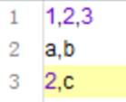 |
|
3 |
=to(10000).new(#:k1,rand(10000):c2,rand()*1000:c3).sort@o(k1) |
Return a table sequence 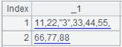 |
|
4 |
=A2.cursor() |
Return a cursor |
|
5 |
=A3.cursor() |
Return a cursor |
|
6 |
=file("D:\\tb4.ctx") |
Generate a composite table file |
|
7 |
=A6.create(#k1,c1) |
Create A6¡¯s base table whose key is k1 |
|
8 |
=A7.append(A4) |
Append data of A4¡¯s cursor to A7¡¯s base table |
|
9 |
=A7.attach(table4,c2,c3) |
Create an attached table table4 for the base table |
|
10 |
=A9.append(A5) |
Append data of A5¡¯s cursor to attached table table4 |
|
11 |
=A9.cursor(;c2<1000;2:3) |
Divide records meeting c2<1000 in the attached table into 3 segments and return a cursor of all columns of the second segment |
|
12 |
=A11.fetch() |
Fetch data from A11¡¯s cursor 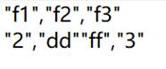 |
|
13 |
=A7.cursor(;c1>0.99) |
Get records meeting c1>0.99 from A7¡¯s base table |
|
14 |
=A13.fetch() |
Fetch data from A13¡¯s cursor 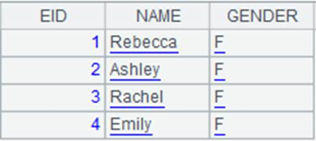b |
|
15 |
=A9.cursor(k1,c1:b,c3;c3>999) |
Get the base table¡¯s k1 field and c1 field from attached table table4, as well as c3 field of the attached table, according to condition c3>999, and rename c1 b |
|
16 |
=A15.fetch() |
Fetch data from A15¡¯s cursor 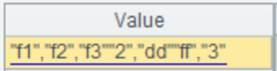 |
|
17 |
=A9.cursor@m(;;3) |
Use @m option to generate a multicursor from attached table table4 |
|
|
A |
|
|
1 |
=file("employee1.ctx") |
Generate composite table file employee1.ctx |
|
2 |
=A1.create@y(#EID,NAME,GENDER,SALARY) |
Create the base table of composite table employee1.ctx, which contains columns EID, NAME, GENDER and SALARY and where EID is the dimension |
|
3 |
=connect("demo").cursor("select EID,NAME,GENDER,SALARY from employee") |
Return a cursor |
|
4 |
=A2.append@i(A3) |
Append records of A3¡¯s cursor to A2¡¯s base table |
|
5 |
=A2.cursor@v(;SALARY>1000;) |
Return a column-wise cursor, and automatically close A3¡¯s cursor after data is fetched from it 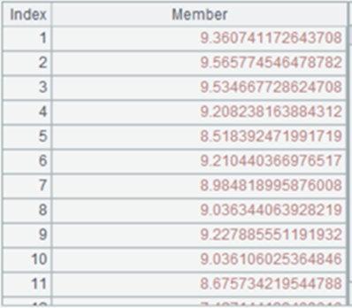 |
|
6 |
=A5.groups(GENDER;avg(SALARY):SALARY_AVG) |
Perform grouping & aggregation operation on A5¡¯s cursor 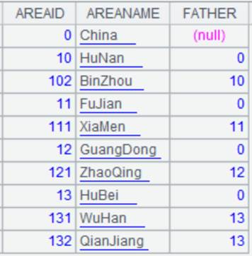 |
|
7 |
=A2.cursor(;SALARY>2000) |
Error is reported, prompting¡°Stream Closed¡± |
When T is a multi-zone composite table
|
|
A |
|
|
1 |
=connect("demo").cursor("select EID,NAME,GENDER,SALARY from employee") |
|
|
2 |
=file("emp.ctx":[1,2]) |
Generate a homo-name files group |
|
3 |
=A2.create@y(#EID,NAME,GENDER,SALARY;if(GENDER=="F",1,2)) |
Return a multi-zone composite table |
|
4 |
=A3.append@x(A1) |
Append data in A1¡¯s cursor to the multi-zone composite table |
|
5 |
=A3.cursor@o(EID,NAME,GENDER,SALARY;SALARY>5000;1:4) |
Divide A3¡¯s multi-zone composite table into 4 segments and return the first segment, during which data is directly retrieved in order without merging zone tables |
Use special types of filtering conditions:
|
|
A |
|
|
1 |
=file("emp.ctx") |
|
|
2 |
=A1.open() |
Open the composite table file |
|
3 |
=A2.import() |
As no parameters are present, return all data in the entity table 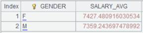 |
|
4 |
=5.new(~:ID,~*~:Num).keys(ID) |
Generate a table sequence using ID as the key 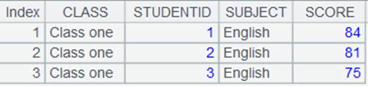 |
|
5 |
=A2.cursor(EID,NAME;EID=A4.find(EID)) |
Use K=w filtering mode; in this case w is Ti.find(K) and entity table records making EID=A4.find(EID) get null or false are discarded; EID is the selected field, to which table sequence A4¡¯s referencing field are assigned 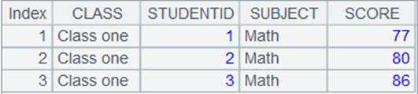 |
|
6 |
=A2.cursor(EID,NAME;EID=A4.pfind(EID)) |
Use K=w filtering mode; in this case w is Ti.pfind(K) and entity table records making EID=A4.pfind(EID) get null or false are discarded; EID is the selected field, to which its ordinal numbers in table sequence A4 is assigned 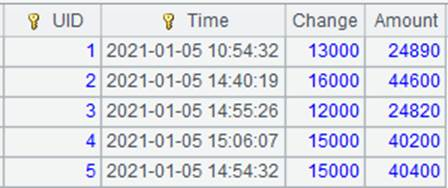 |
|
7 |
=A2.cursor(EID,NAME;EID:A4) |
Use K:Ti filtering mode; compare the entity table¡¯s EID values with the table sequence¡¯s key values and discard entity table records that cannot match 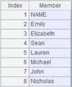 |
|
8 |
=A2.cursor(NAME,SALARY;EID:A4) |
This is a case where K isn¡¯t selected; EID isn¡¯t the selected field, so only filtering is performed 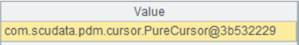 |
|
9 |
=A2.cursor(EID,NAME;EID:A4:null) |
Use K:Ti:null filtering mode; compare the entity table¡¯s EID values with the table sequence¡¯s key values and discard entity table records that can match 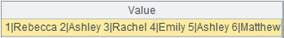 |
|
10 |
=A2.cursor(EID,NAME;EID:A4:#) |
Use K:Ti:# filtering mode; compare with ordinal numbers of table sequence¡¯s records according to the entity table¡¯s EID values, and discard records that cannot match 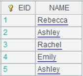 |
|
11 |
=connect("demo").query("select top 2 NAME,GENDER from employee").keys(NAME) |
Return a table sequence using NAME as the key 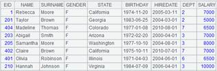 |
|
12 |
=A2.cursor(EID,NAME;(EID=A4.find(EID),NAME=A11.find(NAME),EID!=null&&NAME!=null)) |
Use (K1=w1,¡Kn=wn,w) filtring mode; return records that meet all conditions |